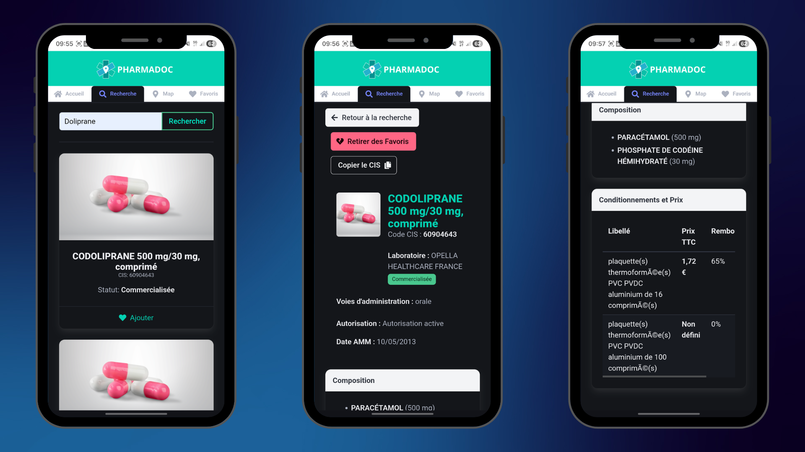
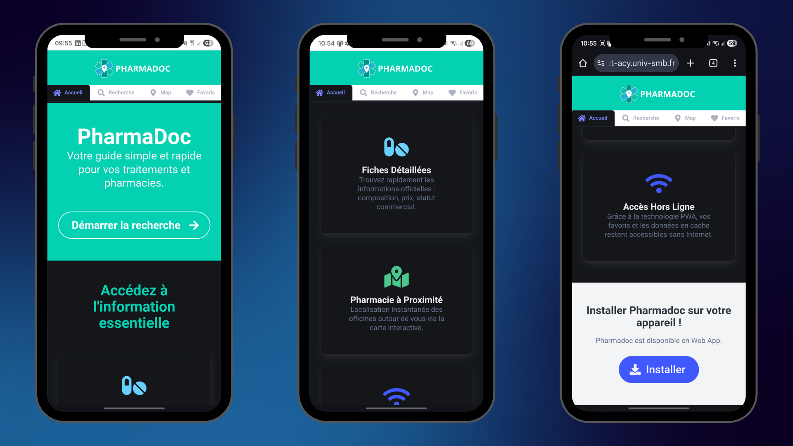
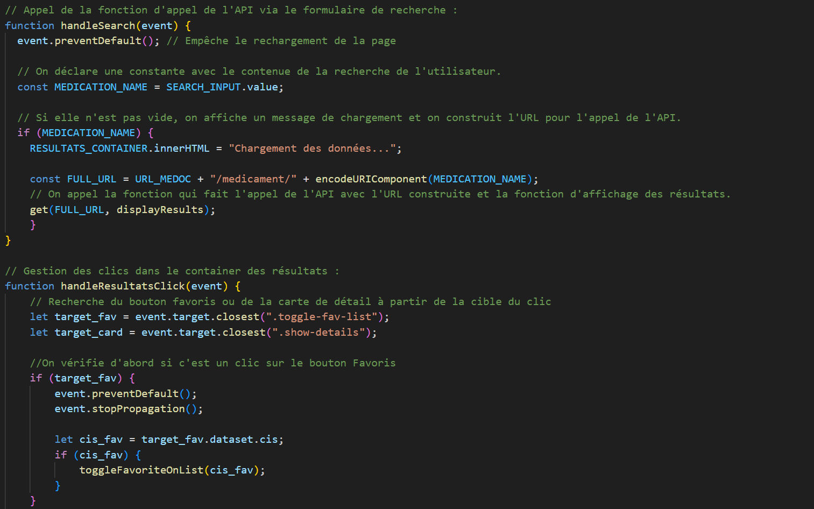
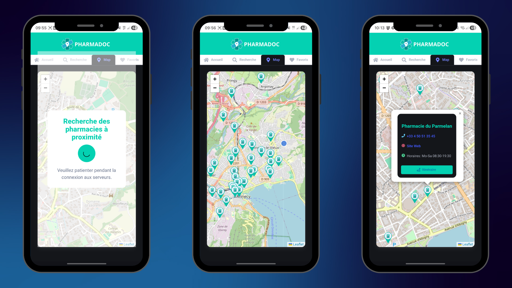
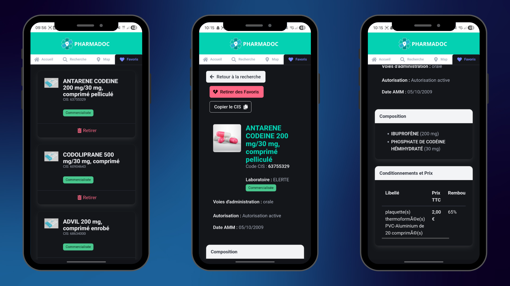

Pharmadoc : Développement d'une Progressive Web App (PWA) de santé

Présentation du projet
Réalisé dans le cadre de la SAÉ 302 à l'IUT d'Annecy, Pharmadoc est une application mobile hybride (PWA) permettant de rechercher des informations sur des médicaments et de localiser les pharmacies à proximité. L'enjeu majeur était de proposer une solution fluide, capable de fonctionner avec une connectivité limitée.
Objectifs techniques
- Standard PWA : Création d'une application installable sur smartphone avec gestion du cache via Service Worker.
- Interactions API : Consommation de données temps réel (API Médicaments et OpenStreetMap via Overpass).
- Géolocalisation : Utilisation des APIs matérielles pour centrer l'utilisateur sur une carte interactive Leaflet.
- Persistance : Stockage local des favoris et mise en cache intelligente des recherches pour un accès hors-ligne.
- Expérience Utilisateur : Interface responsive avec Bulma CSS et retour haptique (vibration).
Sommaire

PARTIE 1 - ARCHITECTURE & APIS
Une application connectée et résiliente
Pour répondre au cahier des charges, j'ai structuré l'application autour d'un Service Worker robuste. Ce dernier intercepte les requêtes réseau pour servir les fichiers statiques (HTML, CSS, images) depuis le cache, garantissant que l'interface s'affiche instantanément, même sans internet.
Double intégration d'APIs externes
Le cœur de Pharmadoc repose sur deux piliers :
1. L'API Médicaments : Pour récupérer les fiches détaillées (composition, prix, taux de remboursement).
2. L'API Overpass (OpenStreetMap) : Pour interroger la base de données cartographique mondiale et extraire
uniquement les points d'intérêt de type "pharmacy" dans un rayon de 5km autour de l'utilisateur.
PARTIE 2 - RÉALISATION ET UX
Fonctionnalités et interactions matérielles
J'ai personnellement développé l'intégralité de la logique JavaScript. Un point d'honneur a été mis sur l'utilisation des Web APIs matérielles pour rapprocher l'expérience d'une application native :
- Vibration API : Un retour haptique est déclenché lors de l'ajout ou du retrait d'un favori.
- Clipboard API : Possibilité de copier le code CIS d'un médicament en un clic.
- LocalStorage : Sauvegarde des favoris et implémentation d'un système de TTL (Time To Live) de 30 minutes pour le cache des pharmacies afin d'éviter les requêtes API inutiles.

Carte Leaflet interactive avec marqueurs personnalisés.

Gestionnaire de favoris accessible 100% hors-ligne.
Conclusion Globale
Ce projet de PWA a été une étape clé dans ma formation. Il m'a confronté aux problématiques
réelles du Web Mobile : la gestion de l'asynchronisme, la performance réseau et la persistance des données côté client.
L'utilisation de Leaflet et de l'API Overpass m'a permis de maîtriser la manipulation
de données géographiques, tandis que la mise en place du Service Worker a renforcé ma compréhension du cycle de vie
des applications modernes. Pharmadoc n'est pas qu'un simple annuaire, c'est un outil complet, optimisé pour l'utilisateur final.